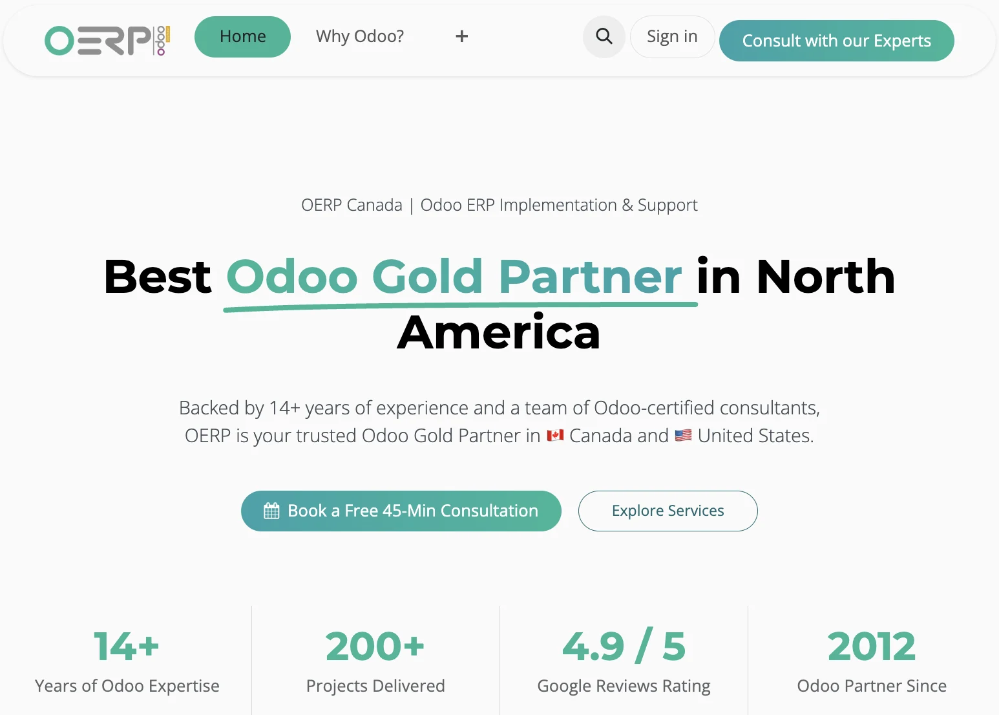
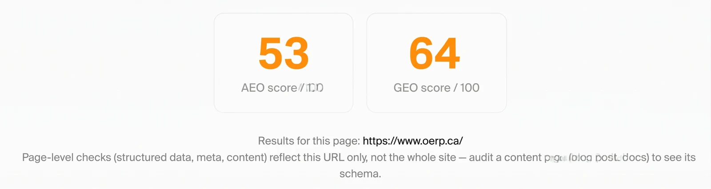
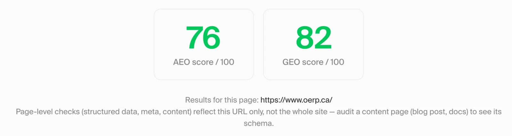

Get recommended by ChatGPT, Gemini and Google AI
Your buyers now ask ChatGPT, Gemini, Perplexity and Google's AI Overviews before they ever visit a website. We optimise your site, content and brand signals so AI engines understand what you do, trust it, and recommend you when it matters.
- 25%
- forecast drop in traditional search volume by 2026
- 800M+
- people use ChatGPT every week
- 2B+
- monthly users see Google AI Overviews
- +23 pts
- AEO score gained for OERP Canada
Sources: Gartner, Feb 2024 · OpenAI, Oct 2025 · Google, Jul 2025.
The 3-part system behind it
AI engines decide who to recommend based on how clearly they can read, trust and cite you. We improve all three.
-
01
Make it readable
Technical and structured data.
Schema markup, clean metadata and AI-crawler access so engines like ChatGPT and Gemini can parse exactly who you are and what you offer.
-
02
Make it quotable
Answer-ready content.
Clear, factual pages and FAQs written in the question-and-answer format AI engines prefer to cite, with the stats and specifics they look for.
-
03
Make it trusted
Authority and brand signals.
Consistent entity information, reviews, mentions and third-party citations that give AI engines the confidence to recommend you over competitors.
What's included
-
AI visibility audit
AEO and GEO scoring of your key pages, plus how often AI assistants mention you versus competitors.
-
Structured data & schema
Organisation, service, FAQ and review markup that helps AI engines understand your business.
-
Metadata & technical fixes
Titles, descriptions, crawlability and AI-crawler access tuned for answer engines.
-
Answer-ready content
Pages and FAQs rewritten to answer the questions your buyers actually ask AI.
-
Brand & citation building
Consistent business information and mentions across the sources AI engines trust.
-
Monthly visibility tracking
Score changes and AI mentions across ChatGPT, Gemini, Perplexity and Google AI Overviews.
How it works
-
Step 1
Audit
We score your key pages for AEO and GEO and test how AI assistants describe your brand today.
-
Step 2
Prioritise
You get a clear list of fixes, ranked by impact on AI visibility.
-
Step 3
Optimise
We implement structured data, metadata and content improvements.
-
Step 4
Measure & expand
We re-score, track AI mentions monthly and extend the work across your site.
Case study
How OERP Canada raised its AI search scores by up to 23 points
OERP Canada, an Odoo Gold Partner with 14+ years of experience, 200+ projects delivered and a 4.9/5 Google rating, had all the credibility buyers look for. But its homepage wasn't structured for AI engines to read and cite it. We focused on the page-level signals AI search relies on: structured data, metadata and content.
- 53 → 76
- AEO score out of 100
- 64 → 82
- GEO score out of 100
- +43%
- improvement in AEO score
- +28%
- improvement in GEO score
Strong credentials, weak AI signals
OERP's homepage already showed real proof: 14+ years of Odoo expertise, 200+ projects and a 4.9/5 rating. But AI engines struggled to extract it. Before our work, the homepage scored 53/100 for answer engine optimisation (AEO) and 64/100 for generative engine optimisation (GEO).

Clearer signals, higher scores
We improved the homepage's structured data, metadata and content so AI engines can understand who OERP serves, what they offer and why they're trusted. The AEO score rose from 53 to 76 and the GEO score from 64 to 82, putting the homepage solidly in the green on both.


Common questions
What's the difference between SEO, AEO and GEO?
SEO helps you rank in search results. AEO (answer engine optimisation) helps your content get pulled into direct answers, and GEO (generative engine optimisation) helps AI assistants like ChatGPT and Gemini understand, trust and recommend your brand.
Does this replace SEO?
No, it builds on it. Strong SEO foundations help, but AI engines also need structured, quotable and consistent information to cite you.
Which AI platforms do you optimise for?
ChatGPT, Gemini, Perplexity, Claude and Google AI Overviews. The fundamentals that help one engine understand you help them all.
How do you measure results?
We score your pages for AEO and GEO before and after, and track how often and how accurately AI assistants mention your brand each month.
Let's talk about ai search visibility
Book a free 30-minute growth call. We'll look at where you are today and show you exactly what we'd build.